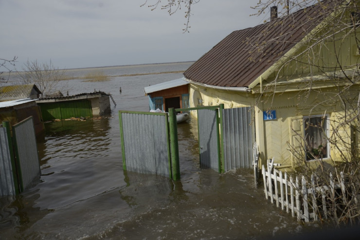

В Северо-Казахстанской области на Сергеевском водохранилище уровень перелива стремительно приближается к историческому максимуму 2017 года, когда в регионе затопило 380 домов и более 5 тысяч дач, передает корреспондент Tengrinews.kz.
По официальным данным, 4 апреля, в 20 часов 50 минут, наполнение Сергеевского водохранилища в регионе достигло проектного объема 693 миллиона кубометров, и начался автоматический сброс воды через гребень водосливной плотины Сергеевского гидроузла.
По данным Северо-Казахстанского филиала РГП "Казводхоз", на 19:00 часов 6 апреля перелив достиг 2 метров 90 сантиметров, что уже значительно выше пиковых показателей семи прошлых лет. Сейчас уровень воды продолжает быстро нарастать и приближается к историческому максимуму 2017 года, когда перелив через гребень плотины составил 338 сантиметров, чего не наблюдалось с момента ввода Сергеевского водохранилища в эксплуатацию, то есть с 1968 года. Масштабы наводнения тогда были огромными: почти четыре тысячи человек были вынуждены покинуть свои дома, были затоплены 380 жилых домов и более 5 тысяч дач. После того паводка власти региона и республики активно обсуждали строительство большого Бузулукского водохранилища между Астаной и Петропавловском. На всех уровнях строительство водохранилища называли решением проблемы паводков на севере Казахстана, отмечая, что оно сможет сглаживать пик паводка, принимая до 1,5 миллиардов кубометров воды. Однако за семь лет водохранилище так и не построили.
Эти фото были сделаны в 2017 году в поселке Кожевенный Петропавловска Tengrinews.kz